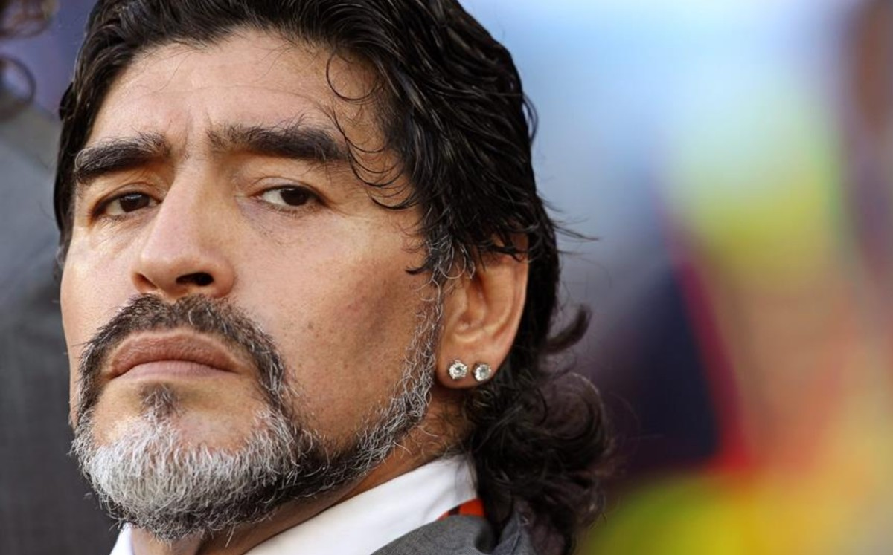
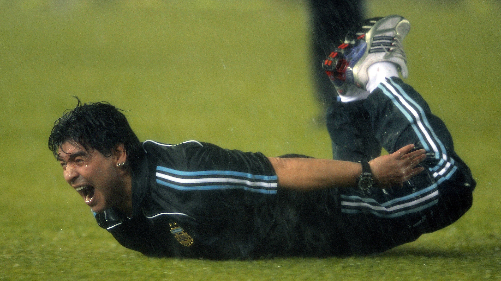
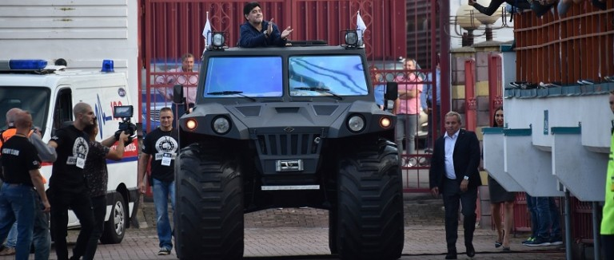
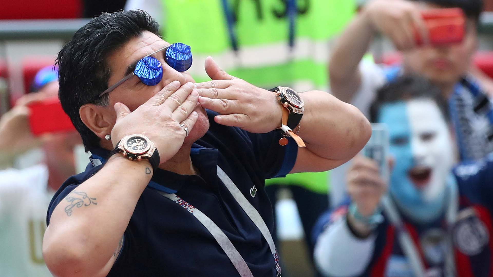

La era como DT
Primeras experiencias (1994-1995)
Maradona debió cumplir los 15 meses de suspensión impuestos por la FIFA durante el Mundial de 1994, luego de que se le detectara sustancias estimulantes en un control antidopaje. La suspensión, que vencía el 15 de septiembre de 1995, le impedía desempeñarse como jugador de fútbol, pero no como director técnico. Gracias a esta posibilidad comenzó las negociaciones para encontrar club, lo que se concretó el 3 de octubre de 1994 al asumir la conducción técnica, en una dupla junto a Carlos Fren, de Deportivo Mandiyú. Su debut como entrenador fue en la sexta fecha con una derrota contra Rosario Central por 2:1, partido en el que Maradona debió dirigir desde la platea ya que no tenía autorización para sentarse en el banco de suplentes. Las peleas con la dirigencia lo llevaron a renunciar el 6 de diciembre, luego de dos meses de trabajo. No realizaría una buena campaña con el club, ya que durante su efímero paso dirigió 12 partidos en los que consiguió 1 triunfo, 6 empates y 5 derrotas.
Entrenador de la Selección Argentina (2008-2010)
En octubre de 2008, tras la renuncia de Alfio Basile, Maradona fue presentado como nuevo director técnico de la Selección Argentina en conferencia de prensa, acompañado de Carlos Bilardo como Coordinador de Selecciones Nacionales.
Su debut se produjo el 19 de noviembre de 2008 en el mismo estadio (Hampden Park), y ante el mismo rival (Escocia), al cual le marcó su primer tanto en la selección. El partido finalizó con un triunfo por 1-0, con gol de Maximiliano Rodríguez.
El debut oficial se produjo el 28 de marzo, por la clasificación al Mundial 2010, frente a Venezuela. El partido, disputado en Buenos Aires, finalizó con una victoria argentina por 4 a 0.
Su segundo partido por esta competición se jugó el 1 de abril frente a la selección boliviana, en La Paz. El resultado fue 6 a 1 para los locales, en una de las mayores goleadas que recibió la selección albiceleste. Más adelante, solicitó a la AFA el cambio de sede para el partido frente a Brasil hacia la ciudad de Rosario, justificando la necesidad de la presión del público sobre el rival. Finalmente, el partido finalizó 3-1 a favor de los brasileños, siendo esta la segunda derrota como local de Argentina en toda la historia de eliminatorias. Durante la semana posterior, sumada una nueva caída del equipo frente a Paraguay, Maradona afirmó que seguiría en el cargo. Se generó cierta polémica pública, alentada por el periodismo deportivo, acerca de sus capacidades para el cargo.
El 14 de octubre de 2009, la Selección dirigida por Maradona logró el pasaje a la Copa del Mundo, al obtener una victoria contra Uruguay en el Estadio Centenario y asegurarse así el cuarto puesto en las Eliminatorias Sudamericanas. Tras la clasificación, Maradona sorprendió con fuertes declaraciones, rayanas con el insulto, contra el periodismo que lo había cuestionado. Debido a las mismas, el 15 de noviembre la Comisión Disciplinaria de la FIFA le prohibió ejercer cualquier actividad relacionada con el fútbol por dos meses y, además, le impuso una multa de 25 000 francos suizos.
En la fase final de la Copa Mundial de Fútbol de Sudáfrica, la selección Argentina compartía el Grupo B con Nigeria, Corea del Sur y Grecia. El primer partido argentino se disputó el 12 de junio frente a Nigeria, en Johannesburgo. Argentina se impuso por la mínima diferencia con un gol de Gabriel Heinze a los seis minutos del partido. Su segundo partido fue contra Corea del Sur el 17 en esa misma ciudad, en el que goleó 4:1 gracias a los tres tantos convertidos por Gonzalo Higuaín. El último partido del grupo, con un equipo conformado en su mayoría por suplentes, la albiceleste venció a Grecia por 2:0, con goles de Martín Demichelis y Martín Palermo.
De esta forma Argentina clasificó a los octavos de final y debió enfrentar a México. El triunfo por 3:1, con dos goles de Carlos Tévez y uno de Higuaín, le otorgó el pase a los cuartos de final donde jugó frente Alemania siendo goleada por 4:0 y quedando eliminada de la Copa del Mundo. Ese fue el último partido que dirigió a la selección argentina, ya que el 27 de julio la AFA decidió no renovarle el contrato porque Maradona no aceptó las modificaciones en la conformación del cuerpo técnico que le habían propuesto. Cabe destacar que Maradona convocó a un total de 108 jugadores a la selección albiceleste.
Al Wasl (2011-2012)
Tras numerosos rumores de ofrecimientos para ser DT de la selección de fútbol de Ucrania o el Aston Villa, Maradona finalmente viajó a los Emiratos Árabes Unidos, más precisamente a la ciudad de Dubái, para hacerse cargo de la conducción técnica del Al Wasl.
El contrato que liga a Diego Maradona durante dos años como entrenador "está valuado en unos 34,5 millones de dólares", según informó el club de Emiratos Árabes Unidos. Para homenajearlo, suprimieron la casaca número 10 del club; además, trajo como refuerzos a Mariano Donda (Godoy Cruz), a Edson Puch (Universidad de Chile), Juan Manuel Olivera (Peñarol) y Richard Porta (Nacional).
En su debut (28 de agosto), se enfrentó en un partido amistoso ante Kalba con victoria de 3:1. Pero perdería agónicamente en su debut oficial contra Al Jazira por 4:3, como visitante en la primera fecha de la Primera División de los Emiratos Árabes Unidos.
En diciembre de ese año, la Federación de Fútbol de los Emiratos Árabes Unidos le aplicó una sanción de tres partidos de suspensión, más otra de 2700 dólares; dicha situación se debe a la trifulca con el entrenador del Al Ain, Cosmin Olaroiu. El Al Wasl fue multado con 20 000 dirhams. Además, fue candidato a ser el DT de las selección de fútbol de Emiratos Árabes Unidos para clasificar y participar en Brasil 2014, según reconoció el presidente interino de la federación de ese país, Yousuf al Serkal.
En marzo de 2012, Maradona aseguró su intención de renovar como entrenador de Al Wasl e incluso ampliar sus funciones para ser un mánager plenipotenciario, como en Inglaterra. Sin embargo, a mediados de año fue despedido por los malos resultados. En diciembre de 2013, corrieron rumores de que podría dirigir a la selección de fútbol de Irak. pero éstos nunca se materializaron.
Al Fujairah
El 7 de mayo de 2017, Maradona fue confirmado por una temporada como entrenador del club Al Fujairah de la Segunda División de los Emiratos Árabes. Tras no obtener el ascenso directo a la Primera División, dejó de ser técnico del equipo, que finalmente conseguiría el ascenso en un repechaje sin él en el cargo.
Dinamo Brest
 En el mes de julio del 2017 fue presentado como el nuevo presidente del Dinamo Brest de Bielorrusia.
Dorados de Sinaloa (2018-2019)
En septiembre de 2018, fue contratado para ser Director Técnico del club Dorados de Sinaloa, en la segunda categoría del fútbol mexicano. Hizo una buena campaña (18 triunfos, 10 empates y 7 derrotas). A pesar de que existía un acuerdo para que Maradona continuara por dos años al frente del conjunto de Culiacán, al que condujo en dos torneos del Ascenso MX y lo depositó en las finales (que perdió frente a Atlético San Luis), el 13 de junio de 2019 se comunicó que Diego dejaba la conducción técnica para enfocarse en sus lesiones de hombro y rodillas, estas últimas afectadas por una importante artrosis que llegó a impedirle caminar. "Juntos sorprendimos al mundo. Demostramos que el fútbol es pasión y corazón. Con el Diego de Sinaloa, #LaHicimosDeDiez. ¡Gracias por todo, Jefe! ¡Recupérate y nos vemos pronto!", publicó el "Gran Pez" en su cuenta de Twitter.
Gimnasia y Esgrima La Plata (2019-2020)
Desde su regreso a la Argentina, Maradona había recibido varios sondeos para dirigir en el fútbol argentino. Defensa y Justicia (luego de la salida de Sebastián Beccacece), Gimnasia La Plata, Belgrano de Córdoba y Nueva Chicago, entre otros, consultaron a su entorno sobre su disponibilidad. Y aunque Maradona había prometido enfocarse en su salud, finalmente el 5 de septiembre de 2019 fue confirmado como nuevo entrenador de Gimnasia La Plata, para intentar recuperarlo de su último puesto en la Superliga Argentina y posible descenso a la Segunda División.
Consecuentemente con el fanatismo que siempre despertó Maradona en Argentina, el club sumó, del jueves al domingo, tres mil nuevos socios, aumentando así un 10% su masa societaria. Para atender esa demanda, en Gimnasia tuvieron que triplicar la estructura de atención: normalmente preparada para recibir a 200 nuevos socios diarios, en cuatro días debió gestionar alrededor de 600 trámites cada jornada (con picos de 800). De hecho, a los 3000 que acaban de ser bienvenidos habría que sumarles al menos 600 más que -aún sin datos oficiales- el club calcula que se asociaron ese lunes, y otros tantos por día hasta el debut del nuevo técnico contra Racing Club, el campeón.294El 30 de octubre de 2020 y coincidiendo con su cumpleaños número 60, Maradona hizo su última aparición en una cancha de fútbol dirigiendo a su equipo, que terminaría derrotando a Patronato por 3-0.